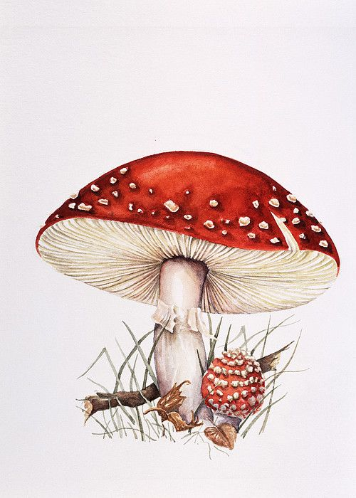
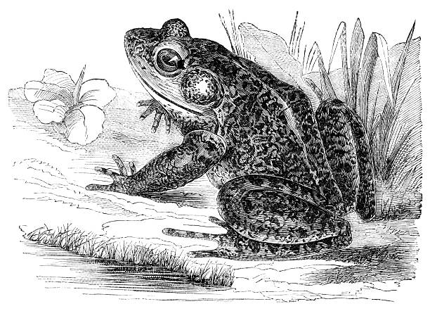

|  | This is the Fly Agaric mushroom and here are some key identifiers if you want to find some of your own. Cap: Immature caps are globose to hemispherical. Later in life they are plate-like. They can reach 8-20 cm in diameter. They are generally bright red with white "warts." These are the remnants of the universal veil. The red color of the cap can fade with age. Some subspecies are more yellow to almost white. Gills: The gills are free and white. Spores: Spores are white. They do not turn blue with iodine. Stipe: White, 5-20 cm high by 1-2 cm wide. It has a slightly brittle, fibrous texture. At the base of the stipe is a bulb that bears the universal veil remnants in the form of two to four distinct rings or ruffs. Along the stem there should also be remnants of the partial viel. These look like a ring around the stem. Taste: Better not taste it. There are many mixed reports. Some say it tastes like chicken. Others say it tastes like fish snacks. Odor: No associated smell other than mild earthiness |
|---|
| To the right of this text is the image of a Spadefoot Toad in order to identify it, you must look for these key characteristics. Stout body is brownish gray to nearly black; back is usually marked with two yellowish lines in an hourglass shape. Skin is relatively smooth with only small warts; oval parotoid glands are present, but not prominent, on the shoulders. Pupil of the eye is vertical. The bottom of each hind foot is equipped with a black, sickle-shaped spade (shown in inset image above). |
 |
|---|